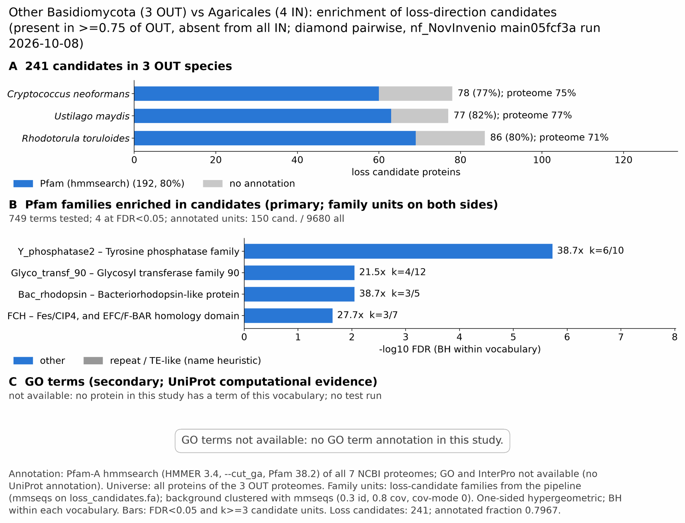

agaricomycetes: functional enrichment (loss)
One-sided hypergeometric test per term; Benjamini-Hochberg FDR within each scope, level and vocabulary. Candidates are the loss candidates: gene families present in the OUT group and absent from the IN group. Universe: proteome. Background clustered: True (22505 sequences in 14544 clusters, mmseqs easy-cluster --min-seq-id 0.3 -c 0.8). Family level: one unit per candidate family and per background cluster.
Sources: Pfam: 2026-01-27-Pfam38.2; InterPro entries: 110.0; GO: releases/2026-07-26; analysis generated 2026-10-14T14:14:19. Source tables: studies/fungi/agaricomycetes_pairwise/analysis/enrichment/outputs/loss/proteome_clustered.
Full record: PROVENANCE. Run report: report.html.
- Annotation: Pfam-A HMM search (hmmsearch, Pfam gathering thresholds) for every species; no UniProt annotation. Each annotation file has a provenance sidecar (domain table, HMMER version, Pfam release); PROVENANCE.yaml lists the files and their checksums.
- GO: not available for this study (no GO annotation in any species).
- Candidate families (pipeline clustering of candidates) and background clusters (mmseqs clustering of the background proteome) are made by different runs, so family-level counts are not fully comparable.
- Low annotation: the candidate set has less than 50% annotation for InterPro 0.0%, GO 0.0%. Enrichment for these vocabularies has low power.
- GO and InterPro: not available for this study. No species has GO and InterPro annotation (Cneo, Umay, Rtor), so no GO and InterPro test was run.
Summary figure

Annotation coverage
Fraction of proteins with at least one term per vocabulary. Universe = all proteins of the species; candidates = the candidate set.
| Species | Set | Proteins | Pfam | Pfam clan | InterPro | GO | Any |
|---|---|---|---|---|---|---|---|
| Cneo | universe | 7826 | 74.9% | 61.3% | 0.0% | 0.0% | 74.9% |
| Cneo | candidates | 78 | 76.9% | 57.7% | 0.0% | 0.0% | 76.9% |
| Umay | universe | 6780 | 76.9% | 62.2% | 0.0% | 0.0% | 76.9% |
| Umay | candidates | 77 | 81.8% | 64.9% | 0.0% | 0.0% | 81.8% |
| Rtor | universe | 8140 | 71.3% | 58.4% | 0.0% | 0.0% | 71.3% |
| Rtor | candidates | 86 | 80.2% | 59.3% | 0.0% | 0.0% | 80.2% |
| ALL_OUT | universe | 22746 | 74.2% | 60.5% | 0.0% | 0.0% | 74.2% |
| ALL_OUT | candidates | 241 | 79.7% | 60.6% | 0.0% | 0.0% | 79.7% |
Tests summary
Per vocabulary: terms with FDR < 0.05 / terms tested. Protein level counts proteins; family level counts candidate families and background clusters.
| Scope | Level | Cand. units | Pfam sig / tested | Pfam clan sig / tested | InterPro sig / tested | GO sig / tested |
|---|---|---|---|---|---|---|
| whole_set | family | 192 | 4 / 749 | 4 / 296 | 0 / 0 (not_available_no_annotated_units) | 0 / 0 (not_available_no_annotated_units) |
| whole_set | protein | 241 | 11 / 1435 | 9 / 375 | 0 / 0 (not_available_no_annotated_units) | 0 / 0 (not_available_no_annotated_units) |
| Cneo | family | 70 | 0 / 320 | 0 / 195 | 0 / 0 (not_available_no_annotated_units) | 0 / 0 (not_available_no_annotated_units) |
| Cneo | protein | 78 | 1 / 445 | 0 / 221 | 0 / 0 (not_available_no_annotated_units) | 0 / 0 (not_available_no_annotated_units) |
| Rtor | family | 86 | 0 / 358 | 0 / 199 | 0 / 0 (not_available_no_annotated_units) | 0 / 0 (not_available_no_annotated_units) |
| Rtor | protein | 86 | 0 / 420 | 0 / 215 | 0 / 0 (not_available_no_annotated_units) | 0 / 0 (not_available_no_annotated_units) |
| Umay | family | 76 | 0 / 334 | 0 / 199 | 0 / 0 (not_available_no_annotated_units) | 0 / 0 (not_available_no_annotated_units) |
| Umay | protein | 77 | 1 / 374 | 0 / 207 | 0 / 0 (not_available_no_annotated_units) | 0 / 0 (not_available_no_annotated_units) |
Top 25 Pfam terms (whole set, family level)
25 rows shown, ordered by FDR then p-value; 4 have FDR < 0.05 (bold).
| Term | Name | k / N cand. | n / M bg | Fold | FDR (BH) |
|---|---|---|---|---|---|
| PF03162 | Y_phosphatase2: Tyrosine phosphatase family | 6 / 150 | 10 / 9680 | 38.72 | 1.87e-06 |
| PF05686 | Glyco_transf_90: Glycosyl transferase family 90 | 4 / 150 | 12 / 9680 | 21.511 | 0.009 |
| PF01036 | Bac_rhodopsin: Bacteriorhodopsin-like protein | 3 / 150 | 5 / 9680 | 38.72 | 0.009 |
| PF00611 | FCH: Fes/CIP4, and EFC/F-BAR homology domain | 3 / 150 | 7 / 9680 | 27.657 | 0.023 |
| PF00172 | Zn_clus: Fungal Zn(2)-Cys(6) binuclear cluster domain | 10 / 150 | 212 / 9680 | 3.044 | 0.217 |
| PF04193 | PQ-loop: PQ loop repeat | 3 / 150 | 16 / 9680 | 12.1 | 0.217 |
| PF11051 | Mannosyl_trans3: Mannosyltransferase putative | 2 / 150 | 5 / 9680 | 25.813 | 0.217 |
| PF20706 | GT4-conflict: Family 4 Glycosyltransferase in conflict systems | 2 / 150 | 5 / 9680 | 25.813 | 0.217 |
| PF00884 | Sulfatase: Sulfatase | 2 / 150 | 8 / 9680 | 16.133 | 0.471 |
| PF13439 | Glyco_transf_4: Glycosyltransferase Family 4 | 2 / 150 | 8 / 9680 | 16.133 | 0.471 |
| PF14437 | MafB19-deam: MafB19-like deaminase | 2 / 150 | 9 / 9680 | 14.341 | 0.544 |
| PF00795 | CN_hydrolase: Carbon-nitrogen hydrolase | 2 / 150 | 12 / 9680 | 10.756 | 0.819 |
| PF04488 | Gly_transf_sug: Glycosyltransferase sugar-binding region containing DXD motif | 2 / 150 | 12 / 9680 | 10.756 | 0.819 |
| PF13692 | Glyco_trans_1_4: Glycosyl transferases group 1 | 2 / 150 | 13 / 9680 | 9.928 | 0.846 |
| PF00096 | zf-C2H2: Zinc finger, C2H2 type | 4 / 150 | 66 / 9680 | 3.911 | 0.846 |
| PF00383 | dCMP_cyt_deam_1: Cytidine and deoxycytidylate deaminase zinc-binding region | 2 / 150 | 14 / 9680 | 9.219 | 0.846 |
| PF00534 | Glycos_transf_1: Glycosyl transferases group 1 | 2 / 150 | 14 / 9680 | 9.219 | 0.846 |
| PF12697 | Abhydrolase_6: Alpha/beta hydrolase family | 3 / 150 | 39 / 9680 | 4.964 | 0.923 |
| PF13855 | LRR_8: Leucine rich repeat | 2 / 150 | 17 / 9680 | 7.592 | 1.000 |
| PF13639 | zf-RING_2: Ring finger domain | 3 / 150 | 48 / 9680 | 4.033 | 1.000 |
| PF00249 | Myb_DNA-binding: Myb-like DNA-binding domain | 2 / 150 | 23 / 9680 | 5.612 | 1.000 |
| PF04082 | Fungal_trans: Fungal specific transcription factor domain | 5 / 150 | 132 / 9680 | 2.444 | 1.000 |
| PF01596 | Methyltransf_3: O-methyltransferase | 1 / 150 | 5 / 9680 | 12.907 | 1.000 |
| PF02732 | ERCC4: ERCC4 domain | 1 / 150 | 5 / 9680 | 12.907 | 1.000 |
| PF04982 | TM_HPP: HPP, transmembrane region | 1 / 150 | 5 / 9680 | 12.907 | 1.000 |
Top 25 InterPro terms (whole set, family level)
Not available: no protein of the candidate source group has a InterPro annotation in this study (for example Pfam-only HMM annotation). No InterPro test was run.
Top 15 GO terms (whole set, family level) — secondary, computational evidence (IEA/IBA) included
Not available: no protein of the candidate source group has a GO annotation in this study (for example Pfam-only HMM annotation). No GO test was run.
Actin cytoskeleton controls
Known actin-related families and how many of their proteins pass each filter. Protein ID columns are left out.
| control | pfam_ids | desc_regex | OUT_universe | OUT_in_matrix | OUT_pass_outgroup_rule | candidates | near_miss_in1 | near_miss_in2 | n_Cneo | n_Umay | n_Rtor | n_Scom | n_Ccin | n_Agbi | n_Lbic |
|---|---|---|---|---|---|---|---|---|---|---|---|---|---|---|---|
| Arp2/3 ARPC2 (P34-Arc) | PF04045 | 3 | 3 | 3 | 0 | 0 | 0 | 1 | 1 | 1 | 1 | 1 | 1 | 1 | |
| Arp2/3 ARPC3 (P21-Arc) | PF04062 | 3 | 3 | 3 | 0 | 0 | 0 | 1 | 1 | 1 | 1 | 1 | 1 | 1 | |
| Arp2/3 ARPC4 | PF05856 | 3 | 3 | 3 | 0 | 0 | 0 | 1 | 1 | 1 | 1 | 1 | 1 | 1 | |
| Arp2/3 ARPC5 (P16-Arc) | PF04699 | 3 | 3 | 3 | 0 | 0 | 0 | 1 | 1 | 1 | 1 | 1 | 1 | 1 | |
| Arp2/3 ARPC1 (description only) | arp2/3 complex.*(41|p41|subunit 1)|ARPC1 | 0 | 0 | 0 | 0 | 0 | 0 | 0 | 0 | 0 | 0 | 0 | 0 | 0 | |
| Arp2 / Arp3 (description only) | actin-related protein (2|3)\b|\bARP[23]\b | 16 | 16 | 15 | 0 | 0 | 0 | 4 | 6 | 6 | 2 | 4 | 0 | 3 | |
| WAVE complex NCKAP1 | PF09735 | 0 | 0 | 0 | 0 | 0 | 0 | 0 | 0 | 0 | 0 | 0 | 0 | 0 | |
| WAVE complex CYFIP (FragX_IP) | PF05994 | 0 | 0 | 0 | 0 | 0 | 0 | 0 | 0 | 0 | 0 | 0 | 0 | 0 | |
| WAVE complex ABI | PF07815|PF27594 | 0 | 0 | 0 | 0 | 0 | 0 | 0 | 0 | 0 | 0 | 0 | 0 | 0 | |
| SCAR/WAVE (SCAR_helical) | PF27569 | 0 | 0 | 0 | 0 | 0 | 0 | 0 | 0 | 0 | 0 | 0 | 0 | 0 | |
| WASP family (WH1) | PF00568 | 3 | 3 | 3 | 0 | 0 | 0 | 1 | 1 | 1 | 2 | 3 | 2 | 2 | |
| WH2 motif (WASP, WAVE, others) | PF02205 | 6 | 6 | 4 | 0 | 0 | 0 | 2 | 3 | 1 | 2 | 2 | 1 | 2 | |
| Formin FH2 | PF02181 | 5 | 5 | 3 | 0 | 0 | 0 | 1 | 2 | 2 | 2 | 2 | 2 | 2 | |
| Formin Drf_GBD / Drf_FH3 / Drf_DAD | PF06371|PF06367|PF06345 | 7 | 7 | 5 | 0 | 0 | 0 | 2 | 2 | 3 | 3 | 3 | 3 | 3 | |
| Ena/VASP (VASP_tetra) | PF08776 | 0 | 0 | 0 | 0 | 0 | 0 | 0 | 0 | 0 | 0 | 0 | 0 | 0 | |
| Coronin (description only) | coronin | 2 | 2 | 2 | 0 | 0 | 0 | 0 | 1 | 1 | 0 | 0 | 0 | 2 | |
| Cortactin (HS1_rep) | PF02218 | 0 | 0 | 0 | 0 | 0 | 0 | 0 | 0 | 0 | 0 | 0 | 0 | 0 | |
| Myosin 2 tail (Myosin_tail_1) | PF01576 | 0 | 0 | 0 | 0 | 0 | 0 | 0 | 0 | 0 | 1 | 1 | 0 | 0 | |
| Myosin head (all myosins) | PF00063 | 13 | 13 | 13 | 0 | 0 | 0 | 4 | 4 | 5 | 6 | 5 | 4 | 6 |
Page written by bin/generate_enrichment_page.py.